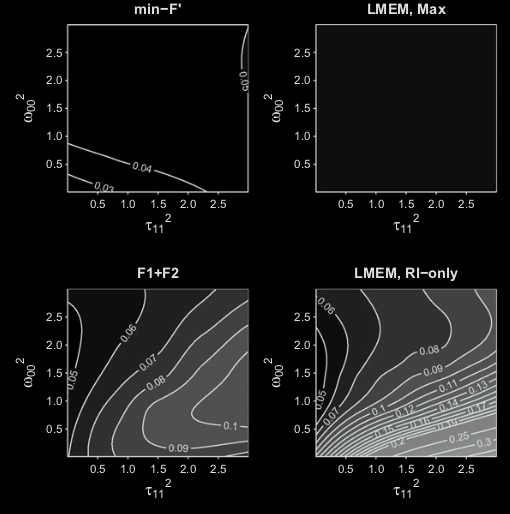
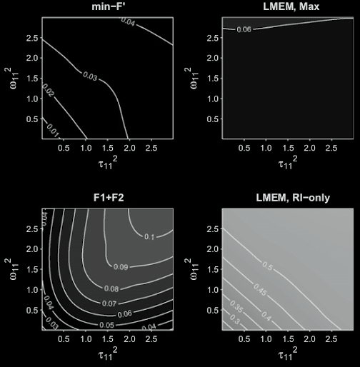
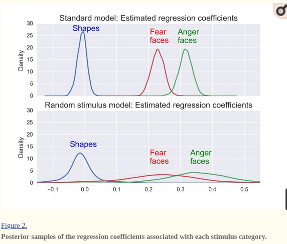
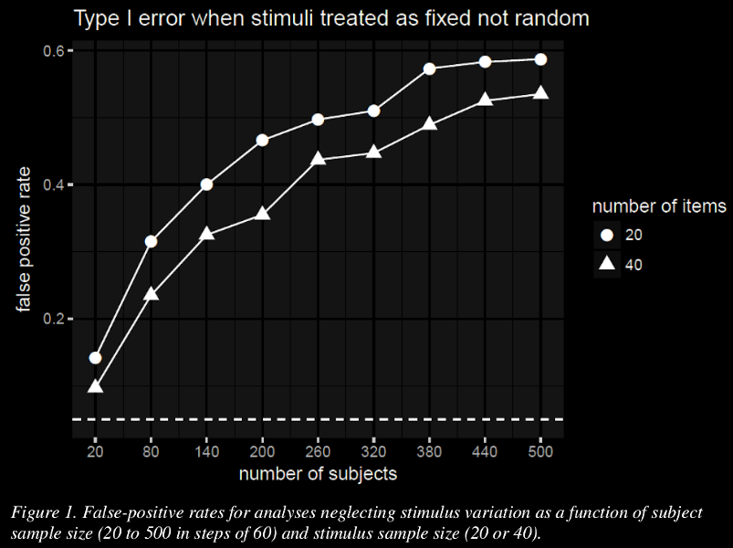

University of Glasgow
Commonly subjects are asked to:
Clark, H. H. (1973). The language-as-fixed-effect fallacy: A critique of language statistics in psychological research. Journal of Verbal Learning and Verbal Behavior, 12, 335-359.
Coleman, E. B. (1964). Generalizing to a language population. Psychological Reports, 14, 219–226.
Forster, K. I., & Dickinson, R. G. (1976). More on the language-as-fixed-effect fallacy: Monte Carlo estimates of error rates for F1, F2, F′, and min F′. Journal of Verbal Learning and Verbal Behavior, 15, 135–142.
lme4 and brms (R), MixedModels.jl (Julia), PyMC3 (Python)Baayen, R. H., Davidson, D. J., & Bates, D. M. (2008). Mixed-effects modeling with crossed random effects for subjects and items. Journal of Memory and Language, 59, 390–412.
Hoffman, L., & Rovine, M. J. (2007). Multilevel models for the experimental psychologist: Foundations and illustrative examples. Behavior Research Methods, 39, 101–117.
Quené, H., & Van den Bergh, H. (2008). Examples of mixed-effects modeling with crossed random effects and with binomial data. Journal of Memory and Language, 59, 413–425.
Barr, D. J., Levy, R., Scheepers, C., & Tily, H. J. (2013). Random effects structure for confirmatory hypothesis testing: Keep it maximal. Journal of Memory and Language, 68, 255–278.
Barr, D. J. (2013). Random effects structure for testing interactions in linear mixed-effects models. Frontiers in Psychology, 4, 328.


Matuschek, H., Kliegl, R., Vasishth, S., Baayen, H., & Bates, D. (2017). Balancing Type I error and power in linear mixed models. Journal of Memory and Language, 94, 305-315.
The target of inference in much of psychology and related fields has been misidentified as a population of subjects or stimuli, when the actual target of inference is a population of events: encounters
Barr, D. J. (2018). Generalizing Over Encounters: Statistical and Theoretical Considerations. In S. A. Rueschemeyer & M. G. Gaskell (Eds.), The Oxford Handbook of Psycholinguistics (2nd Ed).
Judd, C. M., Westfall, J., & Kenny, D. A. (2012). Treating stimuli as a random factor in social psychology: A new and comprehensive solution to a pervasive but largely ignored problem. Journal of Personality and Social Psychology, 103, 54–69.

Westfall, J., Nichols, T. E., & Yarkoni, T. (2016). Fixing the stimulus-as-fixed-effect fallacy in task fMRI. Wellcome Open Research, 1: 23.
Sassenhagen, J., & Alday, P. M. (2016). A common misapplication of statistical inference: nuisance control with null-hypothesis significance tests. Brain and Language, 162, 42–45.
Using the same stimuli across conditions only controls for influence of by-item random intercept variance on your effect of interest, not any by-item random slope variance!
Instead of by-subjects analysis, why not just replicate?

MixedModels.jl and brmsAlso need to consider other factors than just stimuli and subjects
Yarkoni, T. (2019). The generalizability crisis (preprint).
Brauer, M., & Curtin, J. J. (2018). Linear mixed-effects models and the analysis of nonindependent data: A unified framework to analyze categorical and continuous independent variables that vary within-subjects and/or within-items. Psychological Methods, 23, 389.
DeBruine, L., & Barr, D. J. (in press). Understanding mixed effects models through data simulation. Advances and Methods in Practice in Psychological Science.(preprint)
Luke, S. G. (2017). Evaluating significance in linear mixed-effects models in R. Behavior Research Methods, 49, 1494-1502.
McElreath, R. (2020). Statistical rethinking: A Bayesian course with examples in R and Stan. CRC press.
Westfall, J., Kenny, D. A., & Judd, C. M. (2014). Statistical power and optimal design in experiments in which samples of participants respond to samples of stimuli. Journal of Experimental Psychology: General, 143, 2020.
Winter, B. (2019). Statistics for linguists: An introduction using R. Routledge.